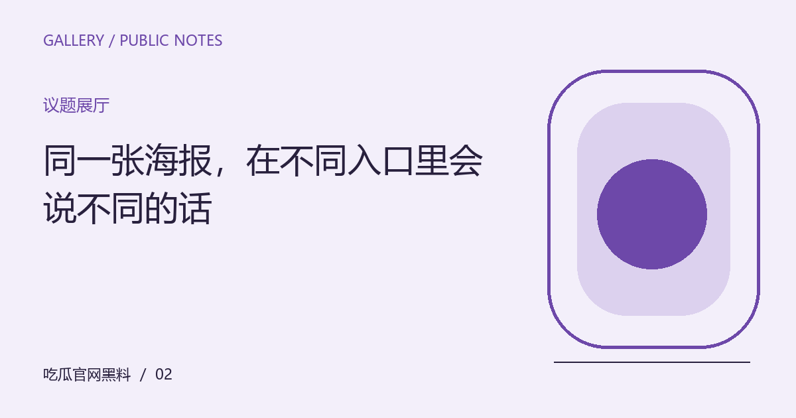

同一张海报，在不同入口里会说不同的话
从展墙到手机缩略图，海报被观看的尺寸与位置会改变注意顺序。讨论视觉表达时，先说明自己正在看哪个版本。

先看见问题发生在哪里
海报在影院入口、社交卡片与手机列表里承担不同任务。完整画面中的细小人物，在缩略图里可能消失，标题也可能成为唯一能辨认的元素。观众对同一设计作出不同评价，有时不是审美冲突，而是看到的版本与观看距离不同。
把观察放回具体语境
先保存正在讨论的公开版本，再观察画面中最先进入视线的部分。可以比较完整尺寸与实际发布尺寸，分别记录人物关系、文字层级和留白如何变化。评论尽量指向看得见的细节，不从一个裁切图推断整套宣传设计，更不要据此编造幕后决策。
带着这些线索继续阅读
这份关于“同一张海报，在不同入口里会说不同的话”的整理，适合用作下一次阅读的检查起点。先明确对象，再核对材料，最后才形成解释。下面几个项目各自回答不同的问题，不必把所有资料压缩成一个好坏判断；缺少其中某项时，说明缺口，远比用想象补出完整结论更有帮助。
- 确认完整图还是裁切图
- 比较不同尺寸的视觉重点
- 把观察与象征联想分别记录
让解释保留应有的边界
视觉含义可以开放，但设计者意图需要可靠材料才可确认。某种颜色让你联想到特定情绪，不代表创作者一定这样安排。对于不同版本，标明出处和使用场景，才能让读者知道自己的理解来自哪一幅画面。
编辑演示：本文用于展示专题阅读；虚构情境不构成真实人物或事件报道。
下一篇：一段公开发言，为什么需要前面的那一个问题 →